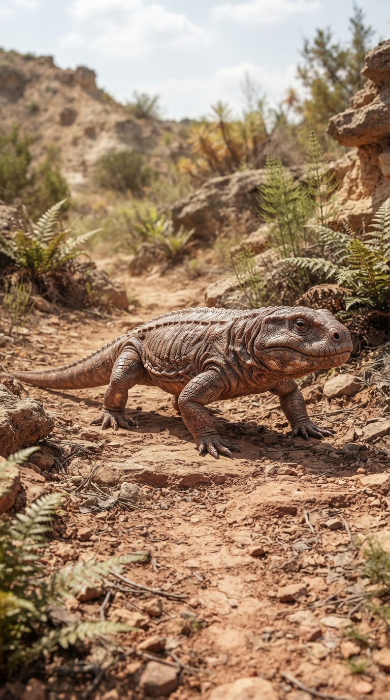
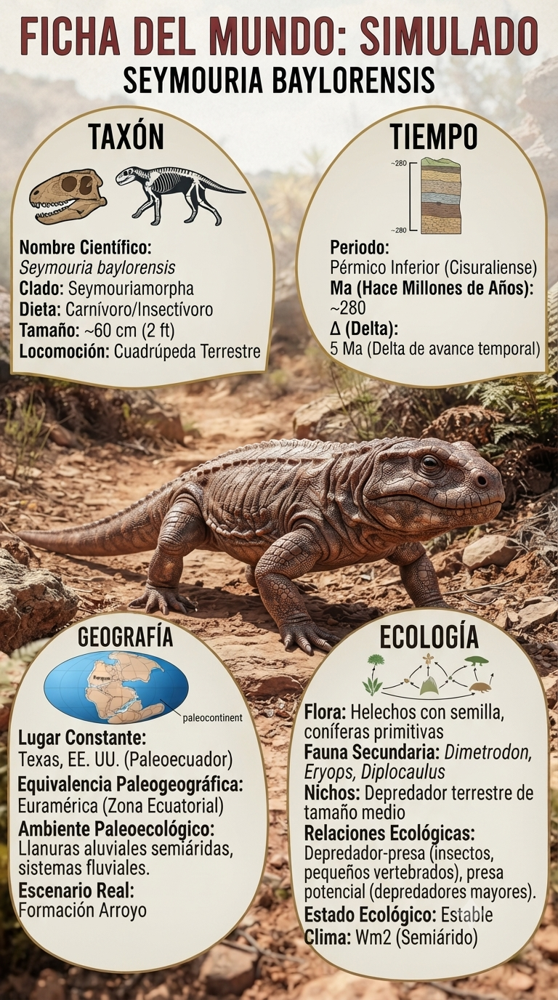
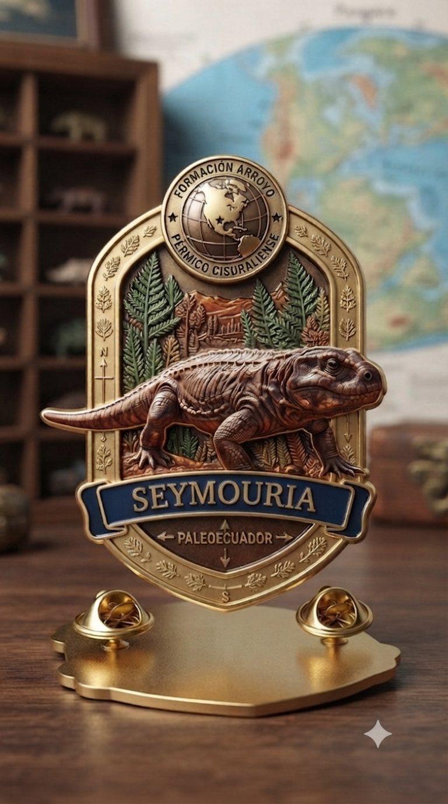
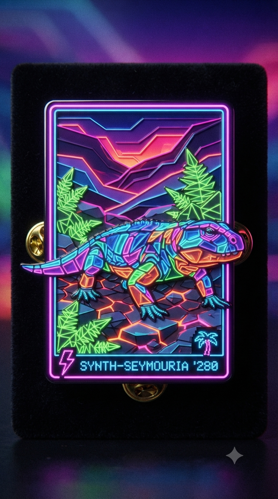

Paleoficha de PalEntropía




TAXÓN:
Seymouria baylorensis
CLADO:
Seymouriamorpha (Reptiliomorpha)
DIETA:
Carnívoro / Insectívoro (depredador de pequeños vertebrados e invertebrados)
TAMAÑO:
Aproximadamente 60 cm de longitud.
LOCOMOCIÓN:
Terrestre; extremidades bien desarrolladas situadas bajo el cuerpo, permitiendo una locomoción eficiente en tierra firme.
TIEMPO:
Pérmico Inferior (Artinskiense), aproximadamente hace 280–272 millones de años.
GEOGRAFÍA:
Norteamérica (Euramérica).
EQUIVALENCIA PALEOGEOGRÁFICA:
Regiones interiores del supercontinente Pangea, alejadas de la costa.
AMBIENTE PALEAOECOLÓGICO:
Llanuras de inundación con bosques abiertos y vegetación sometida a fuertes variaciones estacionales.
ECOLOGÍA:
• Flora: Coníferas primitivas, helechos y vegetación adaptada a periodos alternos de humedad y sequía.
• Fauna secundaria: Sinápsidos basales, anfibios y pequeños tetrápodos continentales.
• Nichos: Depredador terrestre de pequeño tamaño, comparable ecológicamente a los lagartos actuales, especializado en capturar insectos y pequeños vertebrados.
• Relaciones: Constituye un taxón clave en la transición evolutiva entre los grandes anfibios paleozoicos y los primeros amniotas. Aunque mantenía una fase larvaria acuática, los adultos estaban plenamente adaptados a la vida terrestre.
CLIMA:
Wm16 (Tropical estacional). Clima cálido con estaciones húmedas y secas bien definidas, favoreciendo la expansión de vertebrados cada vez menos dependientes del agua.
ESTADO ECOLÓGICO:
Estable. Seymouria representa uno de los mejores ejemplos del paso evolutivo hacia el estilo de vida amniota, mostrando una anatomía extraordinariamente moderna para un reptiliomorfo del Pérmico temprano.